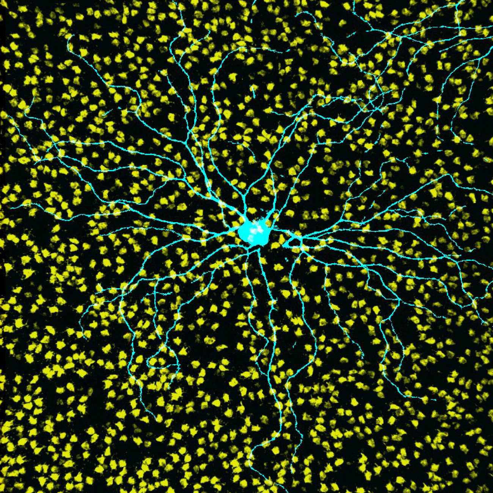
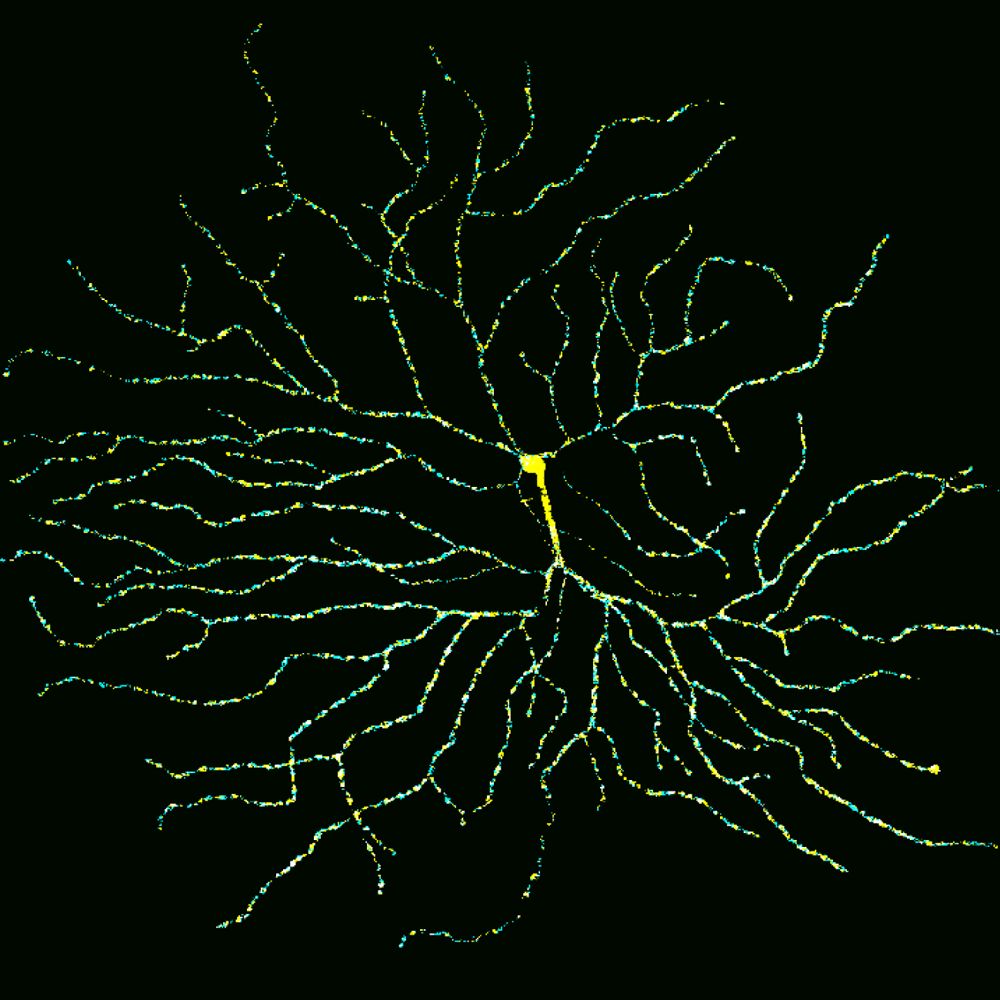
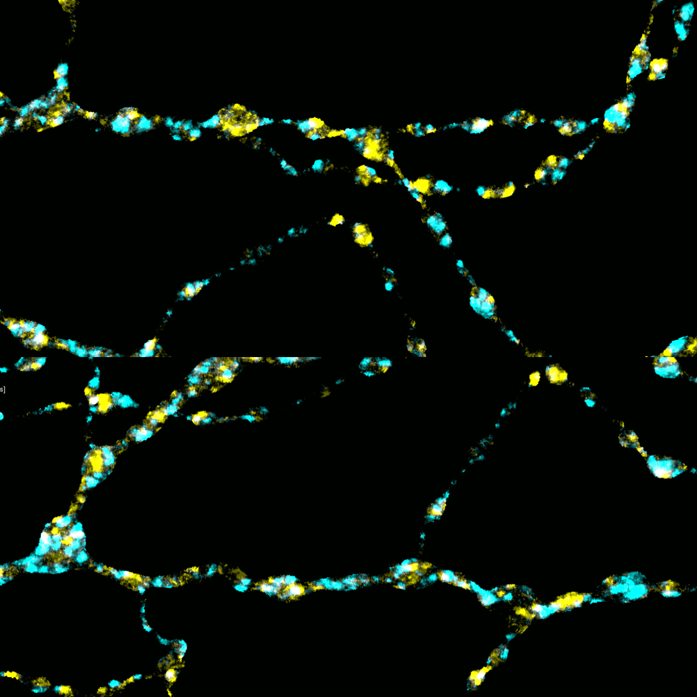

Our lab aims to understand how retinal circuits
respond to restored sensory input and to identify
the factors that constrain complete functional recovery.
Our Research
The nervous system remains flexible while preserving stable function, a balance that is challenged when sensory input is lost during injury or aging. While visual behaviors once thought to be irreversible can now be restored through evolving strategies, recovery often remains incomplete. This limitation suggests that restoring function is not achieved solely by repairing the neurons that first receive sensory input, but also depends on how downstream circuits interpret and integrate returning input. Therefore, our research aims to define how retinal circuits respond to restored input and to identify the factors that constrain complete functional recovery.
We have previously shown that plasticity emerges within the retina to compensate for photoreceptor loss. We are now asking how that plasticity shapes recovery once lost input is restored. Although compensatory changes may help maintain function after degeneration, they may also influence how effectively retinal circuits incorporate returning input.
Our lab combines molecular, anatomical, electrophysiological, and computational approaches to study these questions with precision. Using tools such as protein knockdown, transgenic cell ablation, functional recordings, and high resolution imaging, we investigate how retinal circuits adapt to loss and respond to restoration.
Our goal is to define the mechanisms that support functional recovery, with a particular focus on interplay between plasticity and stability during this process. By identifying the principles that determine whether and how neural circuits regain function, our work aims to reveal broader mechanisms of adaptation and recovery across the nervous system.
Our lab currently focuses on the following goals:
- Determine how restored input is incorporated into surviving circuits
- Determine the conditions that enable circuits to effectively integrate restored input
- Identify the extent and sites of homeostatic plasticity within retinal circuits following input loss and restoration


